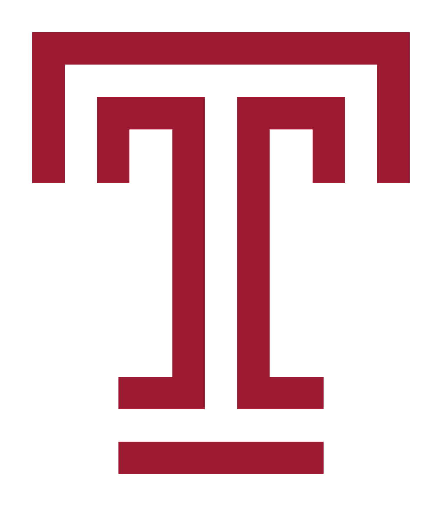

Relevant Experience


Application Consultant
Fox School of Business, Temple University | Philadelphia, PA | September 2022 - Present
- More to come...

Software Engineer Intern - Backend Development
Above & Beyond Studios, Inc. | Remote (Boston, MA) | August 2022 - Present
- Configure controller-route API architecture using Node.js with backend development team to ensure data for user accounts and product inventory is received between client-side and server-side applications
- Arrange data in PostgreSQL database via Knex.js query builder, includes bcrypt.js for sensitive account credentials

Student Computer Lab Consultant
Temple University Dept. of Computer Information Sciences | Philadelphia, PA | August 2021 - September 2022
- Identify client needs among 3 laboratory settings by troubleshooting computer and intermedia equipment and Windows operating systems to reduce response issues and expedite classroom collaboration.
- Organize workspace equipment and check for working hardware among 30-60 workspaces, between open lab hours and prior to closing hours.
Undergraduate Research Assistant
Temple University | Philadelphia, PA | May 2022 - August 2022
- Analyze and compare network intrusion reports to quantify accuracy scores for normal vs. anomaly detection based on machine learning algorithms done through Google CoLab (scikit-learn, Python) and Weka.
- Compare results on performance and limitations of neural network algorithms studied from research papers


Classroom Assistant
Temple University College of Science and Technology | Philadelphia, PA | August 2021 - May 2022
- Assisted in supporting engagement of class materials for Elements of Data Science for the Physical and Life Sciences by tutoring 60 first-year students introductory data science and statistics concepts.
- Demonstrate data analyzation and manipulation techniques with pandas and NumPy on 15 laboratory projects via Jupyter Notebook (Python), extra assistance via communication in-person and Zoom.
- Participated in the grading of lab assignments and worksheets.